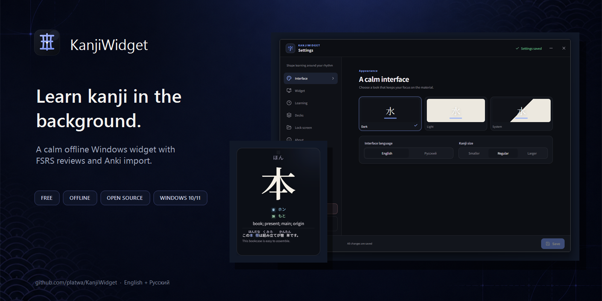
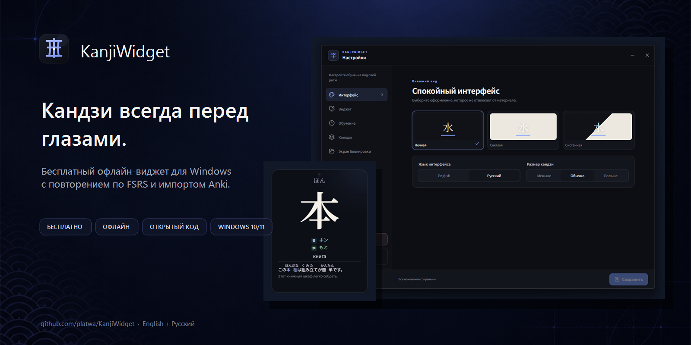
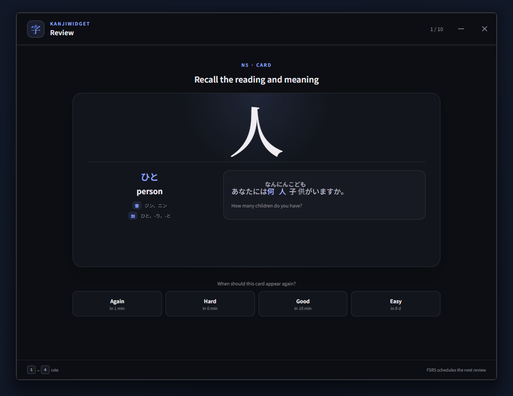
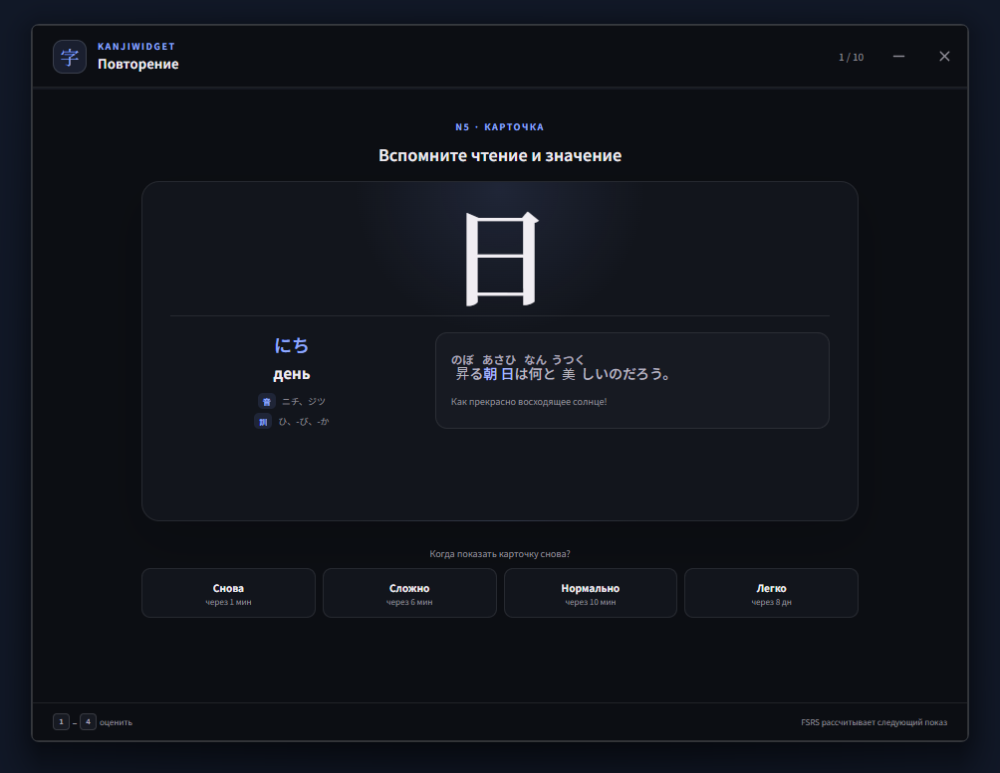

01
Recall before you reveal
In Active Recall mode, try to remember the word or kanji before hovering to reveal its reading and meaning. The example sentence stays visible to give you context.
Japanese, always within sight
Keep Japanese words and kanji on your Windows desktop, with readings, meanings and example sentences. Add your own vocabulary, import Anki cards or start with the included kanji decks.
Windows 10/11 · Free forever · No account


Free & open source
Works offline
No ads or subscriptions
No telemetry
Less friction, more contact
KanjiWidget does not ask you to build a new habit before it can help. It turns unused desktop space into gentle, repeated exposure — without notifications, streaks or guilt.
In Active Recall mode, try to remember the word or kanji before hovering to reveal its reading and meaning. The example sentence stays visible to give you context.
A familiar reveal-and-rate flow schedules each card with FSRS: Again, Hard, Good or Easy. The session uses a fixed pool, so new cards never jump in halfway through.


Import text cards directly from an .apkg file. Images and other media are skipped, while imported cards stay in their own editable deck.
Built around your rhythm
Local by design
Normal study activity uses no network connection. Settings, decks and review history live in a local SQLite database. There is no account, analytics or telemetry.
A different kind of repetition
Anki is a powerful flashcard system. KanjiWidget solves a narrower problem: keeping Japanese close enough that studying does not always have to begin with a deliberate session.
Good to know
Yes. A card can show a word such as 見える, its reading みえる, meaning and an example sentence. Create vocabulary cards or import text from Anki. The included N5/N4 decks focus on kanji; your own vocabulary can come from any level.
KanjiWidget is a standalone desktop companion. Import text from an .apkg file to create a separate deck. Cards and review progress do not sync with Anki, and images and audio are not imported.
No. Normal study is completely local. Cards, settings, and review history stay in a SQLite database on your computer.
The current build is unsigned. Source code and SHA-256 checksums are public. There is no confirmed date for signed releases.
Start with one glance
Version 1.5.0 for 64-bit Windows 10 and 11.
Current builds are not yet code-signed, so Windows SmartScreen may warn about an unknown publisher. Source code and SHA-256 checksums are public.